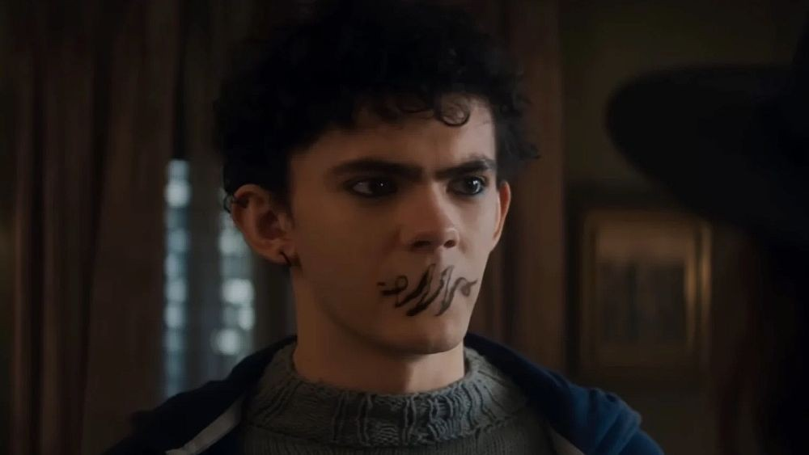

Terungkapnya Identitas Teen di Agatha All Along Episode 4
Sosok Teen (Joe Locke) menjadi misteri yang terus-terusan membuat para penikmat serial Agatha All Along bertanya-tanya. Kini pada akhir episode ke-4, terungkap sudah siapa sebenarnya Teen dan apa hubungannya dengan Agatha (Kathryn Hahn). Banyak penyihir di Agatha All Along ditampilkan lebih saling mengenal satu sama lain dalam episode 4, apalagi setelah tragedi sebelumnya yakni kematian Sharon Davis di akhir Agatha All All episode 3 membuat the Coven semakin dekat. Namun, setiap penyihir memiliki rahasia dan latar belakangnya masing-masing yang akan terungkap secara perlahan. Pada episode 4, masing-masing penyihir mengungkap lebih banyak tentang apa yang mereka alami di masa lalu; Dari hilangnya putra Agatha dan hubungannya dengan karakter Joe Locke yang tidak disebutkan namanya (hanya dipanggil Teen) hingga sifat asli Rio Vidal (Aubrey Plaza) dan petunjuk tragedi mengenai Lilia dan Jennifer. Salah satu yang paling ramai menjadi bahasan tentunya adalah kalimat yang diucapkan Rio di akhir,'Bocah itu bukanlah anakmu', yang mana mengarah pada Teen yang tengah terluka akibat pecahan gelas. Pernyataan itu pun membuat Agatha kian bingung karena ia sangat berusaha melindunginya usai menganggap bahwa bocah itu adalah Nicholas Scratch, putranya yang dikorbankan untuk mendapatkan Darkhold. Hal ini pun membuat penonton makin yakin bahwa dia adalah putra dari Scarlet Witch yakni Billy Kaplan. Ciri-cirinya dan penggambaran karakter tersebut dirasa sangat mirip dengan sosok Billy di dalam komik. Apalagi karakter itu selalu percaya bahwa hal buruk terjadi padanya saat ia berusia 13 tahun, tepatnya saat kejadian di WandaVision. Meski begitu masih ada peluang jika ucapan Rio hanyalah kebohongan belaka meski belum jelas apa keuntungan yang akan dihasilkan olehnya. Mungkin saja ia khawatir jika Teen benar-benar Nicholas dan akan menjadi Mephisto sehingga menutupinya dari Agatha yang mana dilakukannya untuk melindungi penyihir yang merupakan rival dan orang yang dicintai olehnya. Jika memang Teen bukan anak Agatha, sepertinya nasib Nicholas masih belum terjawab. Pertanyaan Teen kepada Agatha tentang apa yang sebenarnya terjadi padanya di Agatha All Together episode 4 mungkin mengisyaratkan bahwa kisah dia menukar Nicholas dengan Darkhold tidak sepenuhnya benar. Jika demikian, Nicholas mungkin masih hidup. Namun, petunjuk kematian Nicholas terkait dengan teori bahwa Rio Vidal sebenarnya adalah Lady Death versi MCU. Rio mengungkapkannya di episode 4, dia harus "melakukan pekerjaannya" dengan cara yang menyakiti seseorang yang dia cintai, yang jelas berarti Agatha. Jika Nicholas meninggal, tugas Rio adalah membawanya, sehingga menyakiti Agatha.